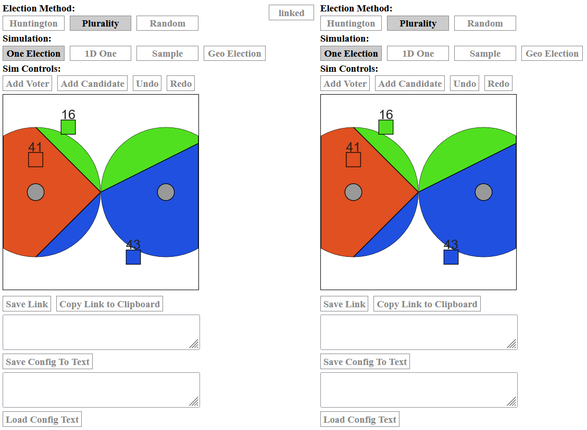
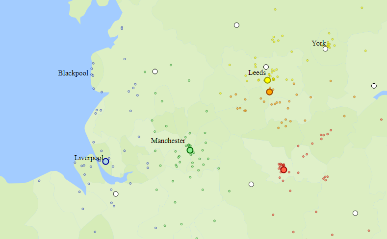

VOTING GAMES and SIMS

Ballot
- A simulator for voting.

Votekit
- A library for making new voting sims.

Easy Tetris
- Working on this... It'll show how proportional representation works.

How to Fix the Election
- Proportional Representation is a cool math problem.